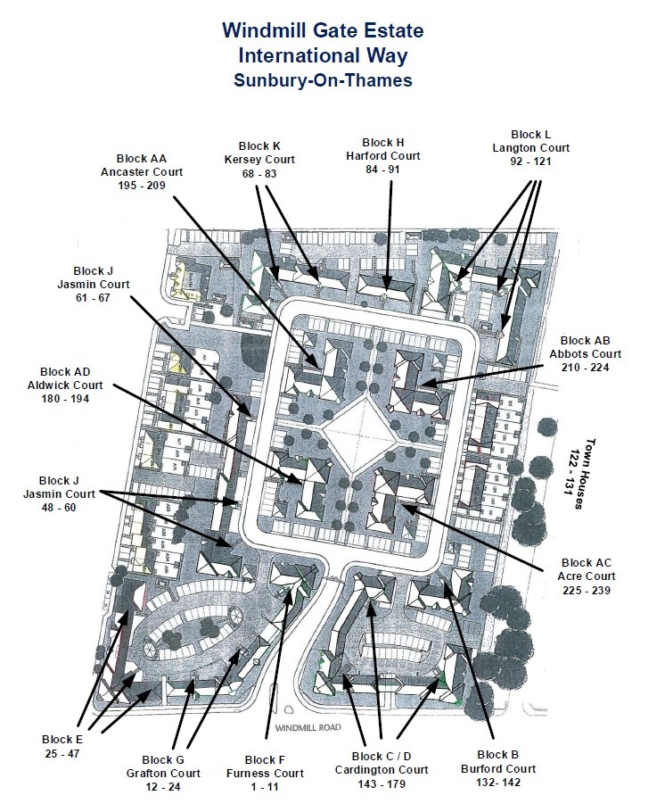

For general quires, please conatact Prime on 020 3700 8733, or you can email them on info@primepm.co.uk
You can find more details in the About tab. Click here to go there.
If you are renting, please conatact your landlord or lettnig agent.
Yes, there is.
- Most of the parking spaces within the estate is allocated (with numbers on the ground). Please do not park there UNLESS authorised by the owner.
- There are a few visitor parking spaces (invicated by the 'V' on the ground), which is available for parking to others.
- No parking is allowed on the double yellow lines at any time.
- Commercial vehicles are not allowed to park overnight on the estate.
Yes. The UK Parking Control (UKPC) are responsible for enforcing the parking restrictions, and issuing tickets for any vehicle that breaks them.
Please find below the blocks and their flat numbers:
- Block F: 1 – 11
- Block G: 12 – 24
- Block E: 25 – 47
- Block J1: 48 - 60
- Block J2: 61 – 67
- Block K: 68 – 83
- Block H: 84 – 91
- Block L: 92 – 121
- Block B: 132 – 142
- Block C/D: 143 – 179
- Block AD: 180 – 194
- Block AA: 195 – 209
- Block AB: 210 – 224
- Block AC: 225 - 239
We also have Town Houses: 122 – 131.
.
Yes, there are a number of bike sheds throughout the estate. Block C/D block B, block F, and there is another one at the back of Block K. For the bike shed codes, please refer to the appropriate RTM Directors/other residents of that block or Prime.
For security reasons, we could not publish the bike shed codes!
Prime has recently sent an email to say that setting off fireworks in International Way is not permitted, as this is a fire hazard and could cause damage to property.
Please visit our Recommendations tab. Click here to be directed to that page.
The closest place is the Shepperton Community Recycling Centre. Charlton Lane, Shepperton, Surrey, TW17 8QA. Clink here to visit their page: Shepperton Community Recycling Centre - Surrey County Council for more information, including opening times, map, etc.
You can find them all in our Recommendations tab. Click here to go the specific section on the page.
The food wate is collected weekly. The general waste & recycle waste are collected every other week. For more information, please visit: Spelthorne Council Rubbish Collection site
If you think your bins have been accidentally missed, you can contact the Council within one working day by completing the online form, click here for the online form or contact Customer Services on 01784 451 499.
......
......
......